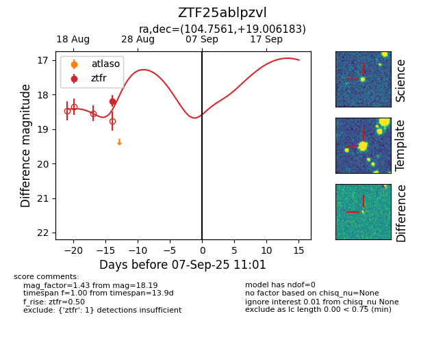

FINK: ZTF25ablpzvl
Lasair: ZTF25ablpzvl
ALeRCE: ZTF25ablpzvl
ZTF25ablpzvl (ztf,fink)
equatorial (ra, dec) = (104.7561,+19.00618)
galactic (l, b) = (196.6740,+10.15720)

last ztfr=18.19
1 ztfr detections